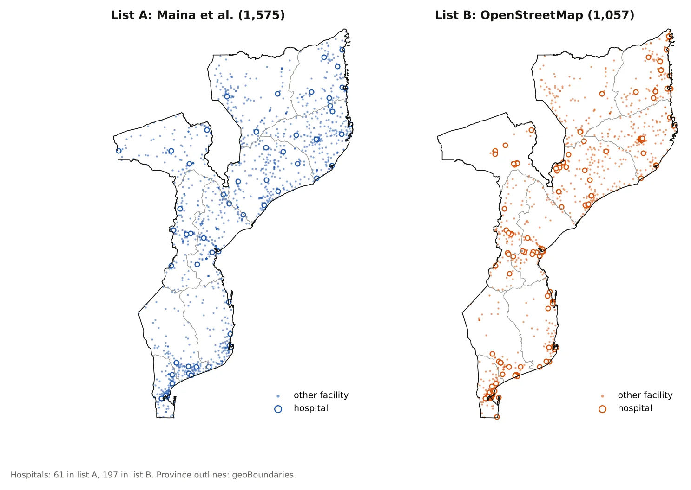
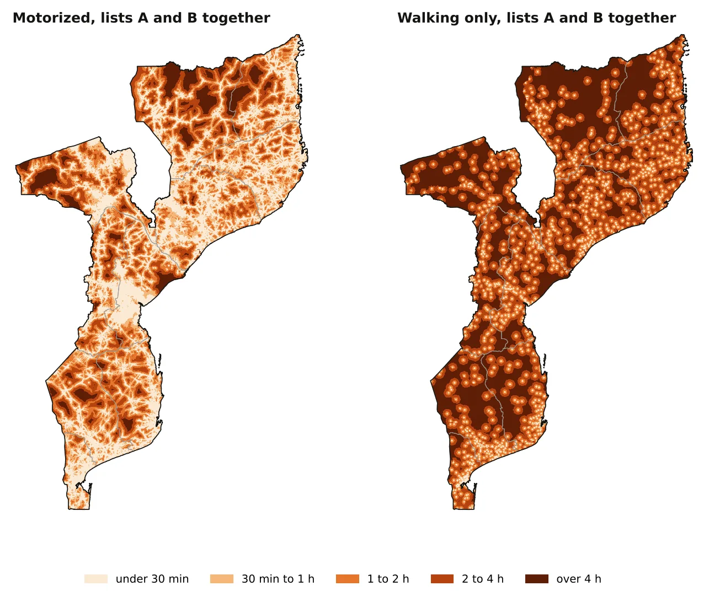
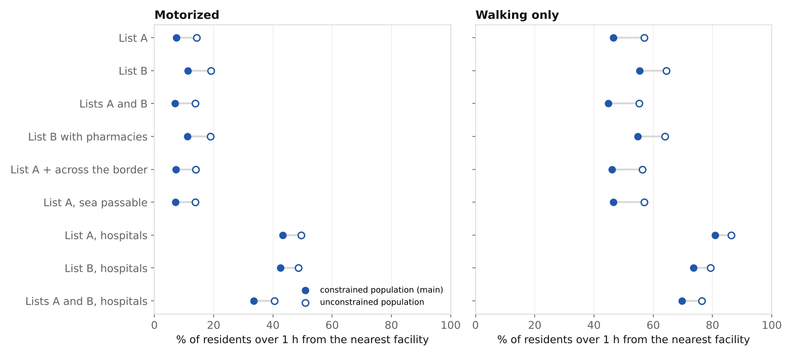
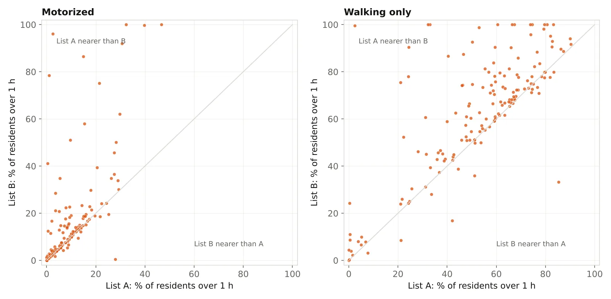
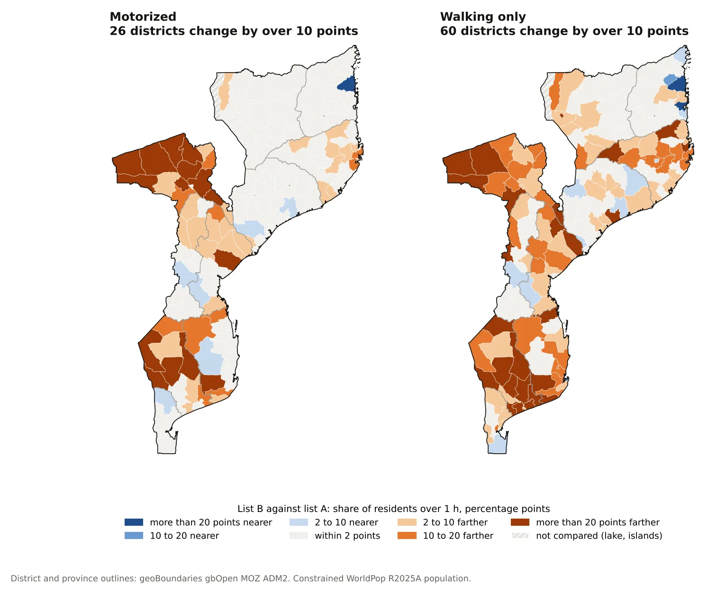
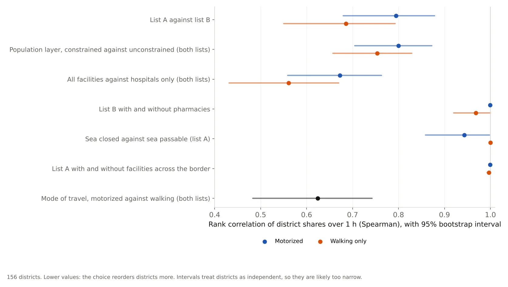
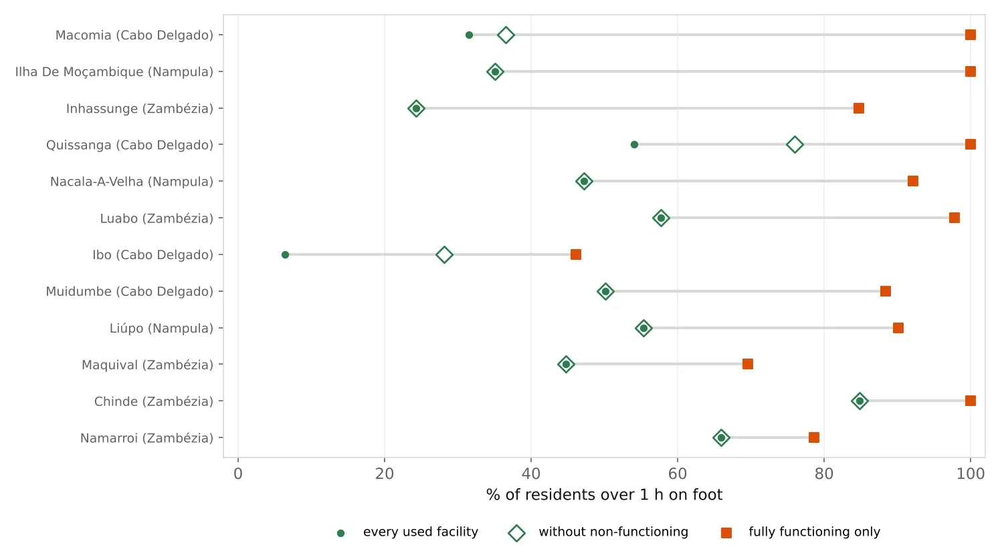

Travel time to health facilities in Mozambique: how district access estimates change with the facility list, mode of travel and facility functionality
David OloyedeNovember 2026
In brief
With motor transport, between 7.0% and 11.3% of people in Mozambique are modelled to live more than an hour from a health facility, depending on which of two open facility lists, or both together, is used; on foot the figure is between 44.9% and 55.4%. These national figures move by a few percentage points with the facility list, but the figure for a single district can move by up to 94 points, and the choice of population map matters as much. All travel times here are modelled, not measured.
Abstract
Estimates of how far people live from health care depend on which facilities are counted, how people are assumed to travel and where the population is placed. We modelled travel time to the nearest health facility across Mozambique’s 159 second-level units (geoBoundaries ADM2) with the Malaria Atlas Project 2020 friction surfaces and WorldPop 2020 population, and repeated the calculation with two facility lists: the public-sector list of Maina et al. (2019) (list A, 1,575 facilities) and the OpenStreetMap health facilities exported by the Humanitarian OpenStreetMap Team (list B, 1,057 facilities without pharmacies). With motorized transport, 7.4% of residents are modelled to live more than one hour from a list A facility and 11.3% from a list B facility; on foot the shares are 46.6% and 55.4%. Across districts, the share beyond one hour under the two lists has a rank correlation of 0.79 by motor and 0.69 on foot, and 26 and 60 districts change by more than 10 percentage points. Counting hospitals only, or switching from motorized to walking travel, tended to reorder districts more (intervals overlap). Replacing the WorldPop R2025A constrained population layer with the older unconstrained layer raises the national motorized share from 7.4% to 14.2%, more than switching lists does; the two layers differ in release and inputs as well as in constraint. In three provinces in the north and centre, removing the 9 facilities (of 10 in the file) that the WHO HeRAMS survey reports as not functioning barely changes the provincial share on foot (57.4% to 57.5%), but a few districts move by up to 22 points. All travel times are modelled; none was compared with measured journeys.
Keywords: geographic access; health facilities; travel time; friction surface; OpenStreetMap; Mozambique
1. Introduction
Travel time to the nearest health facility is a common measure of geographic access. It is modelled by combining a map of facility locations with a friction surface, which gives the time needed to cross each grid cell, and with a gridded population map (Weiss et al., 2018; Weiss et al., 2020). Weiss et al. (2020) published global maps of travel time to health care for motorized and walking travel, built from facility locations compiled from OpenStreetMap, Google Maps and academic sources, including the public-sector list of Maina et al. (2019). An earlier geocoded inventory of public hospitals by the same group was used to estimate access to emergency hospital care across sub-Saharan Africa (Ouma et al., 2018), and earlier work in Mozambique modelled walking and driving access to health centres by province (dos Anjos Luis & Cabral, 2016).
Each input carries choices. Facility lists differ in coverage and in how facilities were located. Hierink et al. (2022) showed that the choice of gridded population dataset alone can change sub-national coverage by more than 70% at a one-hour threshold. Facilities that are listed may also not be working: humanitarian surveys such as the WHO Health Resources and Services Availability Monitoring System (HeRAMS) record whether each facility is functioning. Limited evidence was found in the reviewed literature of studies that vary these inputs together.
This study asks how much district estimates of travel time in Mozambique change with the facility list, the mode of travel, the type of facility counted, facility functionality and the population layer. It does not ask whether the modelled times are correct, which would need measured journeys.
2. Data and methods
2.1 Facility lists
List A is the Mozambique part of the public-sector health facility database of Maina et al. (2019), distributed as the file “00 SSA MFL (130219).xlsx” (Snow et al., 2019; figshare, CC0). It has 1,579 facilities, all with coordinates: 1,256 health centres (centros de saúde), 262 health posts and 61 hospitals. Of these, 1,575 lie within 1 km of the national outline and are used. The database also lists facilities in the six neighbouring countries; 3,776 of them fall inside the analysis grid and are used only in a sensitivity run.
List B is the OpenStreetMap health-facility layer
for Mozambique exported by the Humanitarian OpenStreetMap Team
(Humanitarian OpenStreetMap Team, 2026; file updated on the Humanitarian
Data Exchange on 2 November 2026, ODbL). Of its 1,223 features, we count
a feature as a health facility when its amenity tag is
clinic, hospital, doctors or health post, or, when amenity
is missing, its healthcare tag is clinic, hospital, centre,
doctor or health post. This gives 1,057 facilities used, 197 of them
hospitals. The 133 pharmacies are left out of the main run because they
do not offer consultations, and are added back as a sensitivity run, in
which the 131 that lie within Mozambique are used. Another 14 features
are left out: healthcare=yes (6),
amenity=dentist (3), healthcare=laboratory
(2), healthcare=Urgências_Médicas_e_Laboratório; (1),
healthcare=optometrist (1),
healthcare=psychotherapist (1). Buildings and grounds
mapped as outlines (248 features) are reduced to one point inside the
outline. OpenStreetMap records no ownership for most features, so list B
mixes public and private facilities.
Hospitals are the list A facility types that start with “Hospital” (rural, district, provincial, general and central hospitals), and the list B features tagged as hospitals. The two definitions are not the same, and list B counts 197 hospitals against 61 in list A.
2.2 Facility functionality
The WHO HeRAMS file for Mozambique, 2022 to 2024 by quarter
(Humanitarian Data Exchange, CC BY), covers Cabo Delgado, Nampula and
Zambézia only (WHO, 2024). It has 676 assessment rows. Facility codes
are repeated across different facilities, so we identify a facility by
its cleaned name and its province and district, which gives 672
facilities, and keep the latest assessment of each. The latest
assessments range from 2022 Q1 to 2024 Q3, and 378 are from 2024, so the
file is not a single snapshot. No assessment gives coordinates for 135
facilities; one more had its coordinates one column to the right and was
corrected. Of the 537 facilities with coordinates, we drop those more
than 1 km outside Mozambique or outside the province they report,
leaving 531. Of these, 225 are marked as having approximate coordinates
and are kept. The functionality field (HFFUNCT) of the 531
used facilities reads fully functioning for 446, partially functioning
for 44, non-functioning for 9 and is empty for 32. In the whole file, 10
facilities are reported non-functioning at their latest assessment; 9 of
them have usable coordinates.
We compare three rules: every used facility (listed, with usable coordinates); every facility except those reported non-functioning (main rule); and only facilities reported fully functioning (strict rule, which also drops those with an empty field). Outside the three provinces, list A facilities are added unchanged, so that people near a provincial border can still reach facilities across it. Only the districts of the three provinces are reported for these runs.
2.3 Travel time
Travel time comes from the Malaria Atlas Project friction surfaces for 2020 (Weiss et al., 2020), one for motorized travel and one for walking only, at 30 arc-seconds (about 0.9 km). Each gives the minutes needed to cross one metre of a cell. We cut them to Mozambique plus about one degree, and computed the time from every cell to the nearest facility as the least-cost path over a graph that links each cell to its eight neighbours. The cost of a link is the mean friction of its two cells times the great-circle distance between their centres, so that cells narrower in longitude towards the south cost less to cross from east to west. The paths were found with Dijkstra’s algorithm from all facilities at once (SciPy; Virtanen et al., 2020). A facility on a sea cell at the coast is moved to the nearest land cell within three cells (15 in list A and 10 in list B).
The sea is impassable: it is taken as the cells where the Malaria Atlas Project’s own published travel-time layer has no value. Inland water such as Lake Niassa and Cahora Bassa keeps the friction surface’s values. Paths may cross neighbouring countries, but in the main runs only facilities in Mozambique are destinations. Residents who cannot reach any facility, mostly on islands without a listed facility, count as beyond every threshold; with lists A and B together and motorized travel they number about 17 thousand. A sensitivity run lets paths cross the sea at the friction surface’s sea values, as a stand-in for boats and bridges.
2.4 Population and districts
Population is the WorldPop R2025A 2020 constrained layer at 100 m (Bondarenko et al., 2025), which places people only on cells mapped as settled; it totals 30.3 million. The WorldPop 2000–2020 unconstrained layer for 2020, which spreads people over all land, totals 31.0 million and is used as a sensitivity run (WorldPop, 2018; Tatem, 2017). Each 100 m cell is assigned to the district that contains its centre and to the travel-time cell that contains its centre, so district totals are kept at 100 m while travel time is at about 0.9 km. People on sea cells at the coast are moved to the nearest land cell. Districts are the 159 units of geoBoundaries gbOpen ADM2 for Mozambique (Runfola et al., 2020), grouped into the 10 provinces of its ADM1 layer, in which Maputo city is part of Maputo province. Three units have fewer than 5,000 residents (Ilha Licom, Ilha Risunodo, Lago Niassa) and are left out of the district comparisons, leaving 156 districts.
2.5 Measures and comparisons
For each district, province and the whole country we report the population-weighted share of residents beyond one hour and beyond two hours, and the population-weighted median travel time. Two scenarios are compared through the district shares beyond one hour: the Spearman rank correlation across districts, with a 95% interval from 2,000 bootstrap resamples of districts; the median and largest change in percentage points; the number of districts that change by more than 10 points; and how many of the 20 districts with the highest share stay among the 20 highest. To see how much the results depend on a few facilities, we removed 10% of a list at random 20 times and recomputed the shares. To ask whether one choice reorders districts more than another, we resampled districts once for both comparisons and report the interval of the difference between the two rank correlations (paired bootstrap, 2,000 resamples).
3. Results
3.1 Positions of the facilities
In list A, 4 facilities lie more than 1 km outside Mozambique (at most 3.9 km), against 21 in list B (at most 6.4 km) and 4 in HeRAMS (at most 116 km). In the same order, 19, 16 and 4 facilities fall on a sea cell of the grid, usually because the 0.9 km cell at the coast is mostly sea, and 7, 2 and 1 on a cell of inland water. The point lies in a different province from the one its source reports for 1 of the list A facilities and 2 of the HeRAMS facilities.
The two lists overlap closely where both have a facility. Of the list B facilities, 68% lie within 100 m of a list A facility, and the median distance from a list B facility to the nearest list A facility is 32 m, which suggests that many OpenStreetMap points were copied from the same source or mapped from the same survey. In the other direction, 52% of list A facilities have a list B facility within 1 km and 27% have none within 10 km: list B is missing many rural facilities that list A has (Figure 1). In all, 713 pairs are each other’s nearest neighbour within 1 km. HeRAMS facilities lie a median of 378 m from the nearest list A facility, and 20% are more than 10 km from any.

3.2 National and provincial estimates
With motorized transport, 7.4% of residents live more than one hour from a list A facility, 11.3% from a list B facility and 7.0% from either (Table 1, Figure 2). On foot the shares are 46.6%, 55.4% and 44.9%. Beyond two hours the motorized shares are 1.5%, 3.3% and 1.5%, and the walking shares 26.4%, 37.2% and 24.3%. The population-weighted median time is 8 minutes by motor and 52 minutes on foot with list A. The Malaria Atlas Project’s published layers give 7.0% by motor and 45.5% on foot with the same population layer.
Table 1. Share of residents more than one hour from the nearest facility, by province (%). Population in millions, WorldPop R2025A constrained.
| Province | Population | Motorized, A | Motorized, B | Motorized, A and B | Walking, A | Walking, B | Walking, A and B |
|---|---|---|---|---|---|---|---|
| Cabo Delgado | 2.6 | 7.4 | 6.3 | 5.9 | 49 | 46 | 45 |
| Gaza | 1.6 | 4.5 | 13.2 | 4.0 | 31 | 66 | 29 |
| Inhambane | 1.6 | 5.7 | 10.5 | 5.3 | 48 | 63 | 45 |
| Manica | 2.1 | 11.2 | 11.3 | 10.6 | 49 | 55 | 48 |
| Maputo | 3.4 | 0.3 | 0.2 | 0.2 | 6 | 10 | 5 |
| Nampula | 6.2 | 10.0 | 12.7 | 10.0 | 54 | 62 | 53 |
| Niassa | 1.9 | 7.1 | 7.7 | 7.1 | 49 | 67 | 48 |
| Sofala | 2.5 | 4.7 | 8.0 | 4.5 | 37 | 50 | 35 |
| Tete | 2.9 | 9.3 | 34.8 | 9.1 | 60 | 75 | 59 |
| Zambézia | 5.6 | 9.0 | 8.8 | 8.4 | 62 | 64 | 60 |
| Mozambique | 30.3 | 7.4 | 11.3 | 7.0 | 47 | 55 | 45 |
The largest provincial difference between the lists is in Tete, 9.3% with list A against 34.8% with list B by motor, a difference of 26 points. No province is much better covered by list B.

Counting hospitals only raises the national share beyond one hour to 43.3% (list A), 42.5% (list B) and 33.5% (both) by motor, and to 80.9%, 73.6% and 69.7% on foot (Figure 3). The population layer moves the national figures by more than the facility list. The two layers differ in release and inputs as well as in constraint, so the difference cannot be attributed to constraining alone. With the unconstrained layer the motorized share beyond one hour is 14.2% for list A and 13.8% for both lists, against 7.4% and 7.0% with the constrained layer; on foot it is 57.0% and 55.2%. Switching from list A to list B adds 4 points by motor and 9 on foot, and switching the population layer adds 7 and 10 points. Adding facilities across the border (7.3% by motor), adding pharmacies to list B (11.2%) or letting paths cross the sea (7.2% for list A) changes the national figure little.

3.3 District estimates and rankings
District shares agree less than the national ones (Table 2, Figure 4). Between list A and list B, the rank correlation of the district shares beyond one hour is 0.79 by motor (95% interval 0.68 to 0.88) and 0.69 on foot (0.55 to 0.79). By motor, 26 districts change by more than 10 points, and 60 on foot (Figure 5); 16 and 30 change by more than 20 points. The largest change is 94 points by motor, in Chifunde, and 97 points on foot, in Cidade De Lichinga; list B has no facility in either district, where list A has 7 and 12. Of the 20 districts with the highest motorized share under list A, 13 are also among the 20 highest under list B (9 on foot). Adding list B to list A changes less: the rank correlation is 0.97 by motor and 0.97 on foot, and 1 and 5 districts change by more than 10 points.
Table 2. How district shares beyond one hour change between scenarios (156 districts unless stated). Each cell gives motorized / walking. Changes are in percentage points.
| Comparison | Rank correlation | Median change | Districts changing by more than 10 points | Largest change |
|---|---|---|---|---|
| List A against list B | 0.79 / 0.69 | 1 / 5 | 26 / 60 | 94 / 97 |
| List A against lists A and B | 0.97 / 0.97 | 0 / 0 | 1 / 5 | 28 / 56 |
| All facilities against hospitals (A and B) | 0.67 / 0.56 | 29 / 29 | 110 / 141 | 98 / 79 |
| List A against list A plus facilities across the border | 1.00 / 1.00 | 0 / 0 | 0 / 0 | 3 / 9 |
| List B against list B with pharmacies | 1.00 / 0.97 | 0 / 0 | 0 / 3 | 4 / 46 |
| Sea closed against sea passable (list A) | 0.94 / 1.00 | 0 / 0 | 3 / 0 | 27 / 2 |
| Constrained against unconstrained population (A and B) | 0.80 / 0.75 | 7 / 11 | 58 / 82 | 57 / 64 |
| HeRAMS: all used facilities against non-functioning removed (63 districts) | 0.96 / 0.98 | 0 / 0 | 1 / 2 | 25 / 22 |
| HeRAMS: all used facilities against fully functioning only (63 districts) | 0.74 / 0.65 | 0 / 0 | 6 / 12 | 95 / 68 |
| List A against MAP’s published layer (not independent) | 0.94 / 1.00 | 0 / 0 | 3 / 1 | 27 / 16 |


The mode of travel and the type of facility tended to reorder districts more than the facility list, although the intervals overlap (Figure 6). With both lists together, the rank correlation between motorized and walking shares is 0.62 (0.48 to 0.74), and only 7 of the 20 districts with the highest motorized share are among the 20 highest on foot. Between all facilities and hospitals only, the rank correlation is 0.67 by motor (0.56 to 0.76) and 0.56 on foot (0.43 to 0.67). In the paired bootstrap, the rank correlation between lists A and B exceeds that between all facilities and hospitals by 0.12 by motor (95% interval 0.01 to 0.23) and 0.12 on foot (−0.04 to 0.29), and exceeds that between motorized and walking travel by 0.17 (0.05 to 0.30) when the lists are compared by motor and 0.06 (−0.11 to 0.23) when they are compared on foot. Only the motorized intervals exclude zero. For hospitals alone, lists A and B give a rank correlation of 0.73 by motor, and 54 districts change by more than 10 points, partly because the lists define hospitals differently.

The population layer changes district rankings about as much as the facility list: the rank correlation between the constrained and unconstrained layers is 0.80 by motor and 0.75 on foot, 58 districts change by more than 10 points by motor, and the largest change is 57 points in Mecula. The paired difference from the list comparison is −0.01 by motor (−0.12 to 0.11) and −0.07 on foot (−0.22 to 0.08). Facilities across the border change no district by more than 3 points by motor and 9 on foot (in Chifunde). Pharmacies change 3 districts by more than 10 points on foot, the largest by 46 points (Ilha De Moçambique). Opening the sea changes Ibo by 27 points by motor and no district by more than 2 on foot.
Removing 10% of list A at random 20 times leaves the national motorized share between 7.6% and 8.1% and the walking share between 48.5% and 49.4%. Single districts move more: in the median run the largest district change is 17 points by motor (up to 23) and 43 points on foot (up to 72). District estimates in sparsely served areas therefore rest on a few facilities each.
With list A, our travel times are close to the Malaria Atlas Project’s published motorized layer: the rank correlation over the grid cells of Mozambique is 0.997 (every seventh cell), and the median difference is 0.1 minutes (95th percentile 0.9 minutes). For walking it is 0.977, and with list B 0.89 by motor. At district level the rank correlation with the published layer is 0.94 by motor and 1.00 on foot for list A, and 0.75 by motor for list B. This agreement is not an independent check. The published layer uses the same friction surface and its facility set includes the list of Maina et al. (2019); the agreement shows that our implementation reproduces theirs and that their facility set in Mozambique behaves like list A, not that either is correct.
3.4 Functioning facilities in Cabo Delgado, Nampula and Zambézia
Across the three provinces, the share of residents more than one hour from a HeRAMS facility on foot is 57.4% when every listed facility with usable coordinates counts (531 of 672), 57.5% without the non-functioning ones and 61.2% when only fully functioning facilities count. By motor the shares are 10.2%, 10.2% and 12.3%. For comparison, list A gives 56.1% on foot and 9.1% by motor in the same provinces, and the rank correlation between list A and HeRAMS across the 63 districts is 0.80 by motor and 0.67 on foot.
Removing the non-functioning facilities changes 2 districts by more than 10 points on foot; the largest change is 22 points in Quissanga (by motor 25 points, in Ibo). The strict rule changes more: 12 districts change by more than 10 points on foot and 6 by motor. The largest change in both modes is in Macomia: 68 points on foot and 95 by motor. The rank correlation with the all-facility run falls to 0.65 on foot (0.41 to 0.85) (Figure 7). The districts that change most under both rules are in Cabo Delgado, but the strict rule also removes facilities whose status is simply missing.

3.5 Map of the districts
Pick a facility list, a mode of travel and a measure, then select a district on the map or from the list. The HeRAMS options cover Cabo Delgado, Nampula and Zambézia only. Districts with too few residents to compare are left grey. Values use the WorldPop R2025A constrained population layer and are modelled, not measured.
Select a district on the map, on the list above it, or use Tab and Enter.
Show all districts as a table
4. Discussion
National estimates of geographic access in Mozambique are fairly stable across facility lists, but district estimates are not. A national motorized share of 7.4% to 11.3% beyond one hour hides districts whose share changes by 94 points when one list replaces the other. The difference comes mainly from where list B is thin: its points largely coincide with list A where both have a facility, and many rural facilities in list A have no counterpart in OpenStreetMap. Combining the lists changes little relative to list A alone, so list A carries most of the coverage in these runs. That does not show list A is complete; it is a 2019 compilation and newer facilities may be missing from both lists.
The choice of population layer matters as much as the facility list at district level and more at national level, in line with the size of the differences reported by Hierink et al. (2022) for sub-Saharan Africa. The constrained layer places people on mapped settlements only and the unconstrained layer spreads people across all land. The two layers differ in release and inputs as well as in constraint, so the difference cannot be attributed to constraining alone. Neither is a census, and we cannot tell from these data which is closer to where people live.
Walking and motorized travel, and all facilities against hospitals, tended to rank districts differently enough that a list of “least served” districts depends on which question is asked. The HeRAMS comparison shows that facilities reported non-functioning change provincial figures little but matter for single districts. It covers three provinces and a mix of quarters from 2022 to 2024, so it cannot be extended to the rest of the country.
5. Limitations
All travel times are modelled from friction surfaces. They assume the fastest mode is always available, the nearest facility is always used, and travel is not affected by season, cost, security or queues, and they were not compared with measured travel times or survey reports. The friction surfaces date from 2020 and the population from 2020, while list A was compiled by 2019, OpenStreetMap was exported in 2026 and HeRAMS covers 2022 to 2024; the scenarios therefore mix dates. OpenStreetMap coverage depends on where mappers have worked and is uneven, and its hospital tag does not follow the national hierarchy. Facility coordinates in list A were not checked on the ground, and 225 HeRAMS facilities report approximate coordinates. The 0.9 km grid cannot represent short bridges or causeways, and island residents depend on whether a facility is listed on the island. Facilities across the border are used only in a sensitivity run, and we do not know whether residents use them. District shares rest on modelled population and, in sparsely served districts, on a few facilities each, as the random-removal runs show. Bootstrap intervals treat districts as independent; neighbouring districts share facilities and roads, so the intervals are likely too narrow. The comparison with the Malaria Atlas Project’s published layer uses the same friction surface and is not independent. This study measures geographic access only; it says nothing about quality of care, opening hours or whether services are affordable.
6. Conclusion
In Mozambique, the national share of residents modelled to live more than one hour from a health facility moves by a few points with the facility list and by more with the population layer, while district shares can move by tens of points. District rankings of access tended to change most with the mode of travel and the type of facility counted (intervals overlap, and a paired bootstrap separates them from the facility list only for motorized travel), less with the facility list and population layer, and least with facilities across the border, pharmacies or the treatment of the sea. Where district estimates guide planning, reporting them under more than one facility list and population layer, and saying which mode and facility type they assume, would show how much they can be relied on.
Key terms
- Travel time
- The modelled time from where a person lives to the nearest listed facility, along the fastest path over the map. It is not a measured journey.
- Friction surface
- A grid that gives the time needed to cross each cell, from roads, land cover, slope and water. The Malaria Atlas Project publishes one for motorized travel and one for walking only, for 2020.
- List A
- Public-sector health facilities compiled by Maina et al. (2019) from national lists, with coordinates.
- List B
- Health facilities mapped in OpenStreetMap, as exported by the Humanitarian OpenStreetMap Team. Pharmacies are left out of the main runs.
- HeRAMS
- The WHO Health Resources and Services Availability Monitoring System. Its Mozambique file records, for three provinces in the north and centre, whether each facility was functioning when last assessed in 2022–2024.
- Constrained and unconstrained population
- Two WorldPop maps of where people live. The constrained map puts people only on mapped settlements; the unconstrained map spreads them over all land. Both are models, not census counts.
- Share beyond one hour
- The share of a district's modelled residents whose travel time to the nearest facility is more than 60 minutes. Residents who cannot reach any facility count as beyond.
- Rank correlation
- Spearman's rank correlation between two sets of district values. 1 means the districts come in the same order under both; lower values mean the order changes.
- Percentage point
- The difference between two percentages. A share that moves from 20% to 30% changes by 10 points.
Data, code and citation
Code is released under the MIT licence and derived data under CC BY 4.0, from https://github.com/oloyededavid/Mozambique-Health-Access; files derived from OpenStreetMap remain under the ODbL. Source data keep their own terms: Maina et al. (2019) facility list (CC0), OpenStreetMap via the Humanitarian OpenStreetMap Team (ODbL), WHO HeRAMS via the Humanitarian Data Exchange (CC BY), Malaria Atlas Project friction surfaces (CC BY 4.0), WorldPop (CC BY 4.0) and geoBoundaries (CC BY 3.0 IGO for Mozambique).
- district_access.csvDistrict shares and median times for lists A, B and both
- district_values.jsonValues behind the district map
- comparisons.jsonRank correlations and changes between scenarios
- paired.jsonPaired bootstrap of differences between rank correlations
- facilities.csvFacility points with their checks (OpenStreetMap rows under the ODbL)
- facilities.jsonFacility counts, positional checks and matching
- sources.jsonSource files with web address, size and SHA-256
- Paper (Word)Same text, for printing or comment
- RepositoryScripts and tests
How to cite
Oloyede, D. (2026). Travel time to health facilities in Mozambique: how district access estimates change with the facility list, mode of travel and facility functionality. https://github.com/oloyededavid/Mozambique-Health-Access
A note from me
Thank you for reading. My earlier studies were in and around Nigeria, and I chose Mozambique to test whether the same open data and methods carry over to another country. What I found is that national figures for access to health care hold up across the choices I tried, while district figures can change a great deal with the facility list, the way people travel and the population map. Everything here is modelled travel time, not measured journeys, so if you know these districts or have better data, I would like to hear from you: open an issue on the repository.
David
Was this research useful?
One reaction per browser. Counts are anonymous and kept by a public counter.
References
- Bondarenko, M., Priyatikanto, R., Tejedor Garavito, N., Zhang, W., McKeen, T., et al. (2025). Constrained estimates of 2015–2030 total number of people per grid square at a resolution of 3 arc (approximately 100m at the equator), R2025A version v1. University of Southampton. doi:10.5258/SOTON/WP00839
- dos Anjos Luis, A., & Cabral, P. (2016). Geographic accessibility to primary healthcare centers in Mozambique. International Journal for Equity in Health, 15, 173. doi:10.1186/s12939-016-0455-0
- Hierink, F., Boo, G., Macharia, P. M., Ouma, P. O., et al. (2022). Differences between gridded population data impact measures of geographic access to healthcare in sub-Saharan Africa. Communications Medicine, 2, 117. doi:10.1038/s43856-022-00179-4
- Humanitarian OpenStreetMap Team. (2026). Health facilities of Mozambique (OpenStreetMap export, file updated 2 November 2026). Humanitarian Data Exchange. https://data.humdata.org/dataset/hotosm_moz_health_facilities
- Maina, J., Ouma, P. O., Macharia, P. M., Alegana, V. A., et al. (2019). A spatial database of health facilities managed by the public health sector in sub Saharan Africa. Scientific Data, 6, 134. doi:10.1038/s41597-019-0142-2
- Ouma, P. O., Maina, J., Thuranira, P. N., Macharia, P. M., et al. (2018). Access to emergency hospital care provided by the public sector in sub-Saharan Africa in 2015: a geocoded inventory and spatial analysis. The Lancet Global Health, 6(3), e342–e350. doi:10.1016/S2214-109X(17)30488-6
- Runfola, D., Anderson, A., Baier, H., Crittenden, M., et al. (2020). geoBoundaries: A global database of political administrative boundaries. PLOS ONE, 15(4), e0231866. doi:10.1371/journal.pone.0231866
- Snow, R. W., Maina, J., Ouma, P. O., Macharia, P. M., et al. (2019). Public health facilities in sub Saharan Africa [Data set]. figshare. doi:10.6084/m9.figshare.7725374.v1
- Tatem, A. J. (2017). WorldPop, open data for spatial demography. Scientific Data, 4, 170004. doi:10.1038/sdata.2017.4
- Virtanen, P., Gommers, R., Oliphant, T. E., et al. (2020). SciPy 1.0: fundamental algorithms for scientific computing in Python. Nature Methods, 17, 261–272. doi:10.1038/s41592-019-0686-2
- Weiss, D. J., Nelson, A., Gibson, H. S., Temperley, W., et al. (2018). A global map of travel time to cities to assess inequalities in accessibility in 2015. Nature, 553, 333–336. doi:10.1038/nature25181
- Weiss, D. J., Nelson, A., Vargas-Ruiz, C. A., Gligorić, K., et al. (2020). Global maps of travel time to healthcare facilities. Nature Medicine, 26, 1835–1838. doi:10.1038/s41591-020-1059-1
- WHO. (2024). Mozambique: Health facilities (HeRAMS 2022–2024 by quarter). Humanitarian Data Exchange. https://data.humdata.org/dataset/health-cluster-mozambique
- WorldPop. (2018). Global 100m Population (Mozambique, 2020, unconstrained). University of Southampton. doi:10.5258/SOTON/WP00645